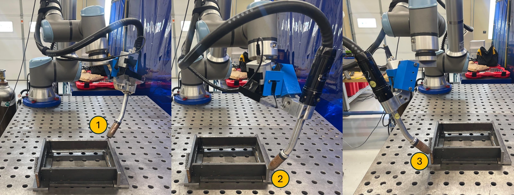
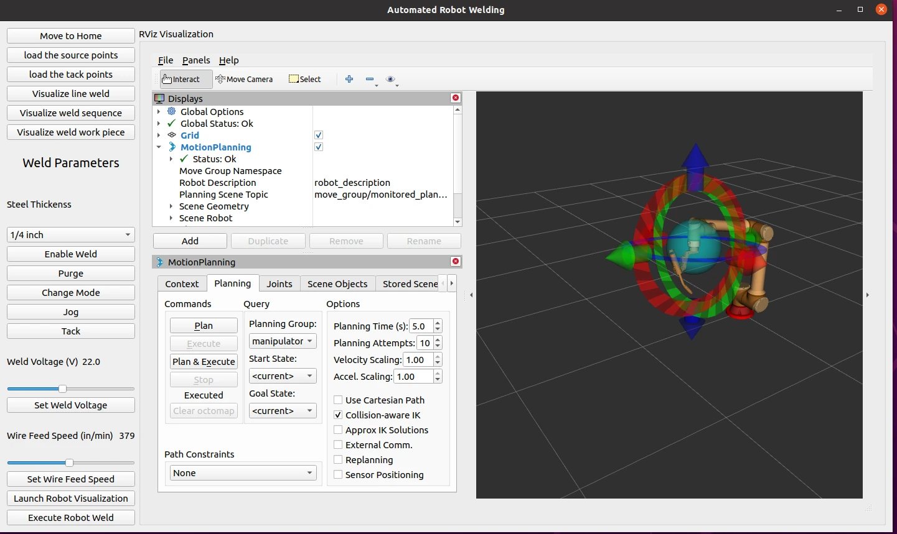
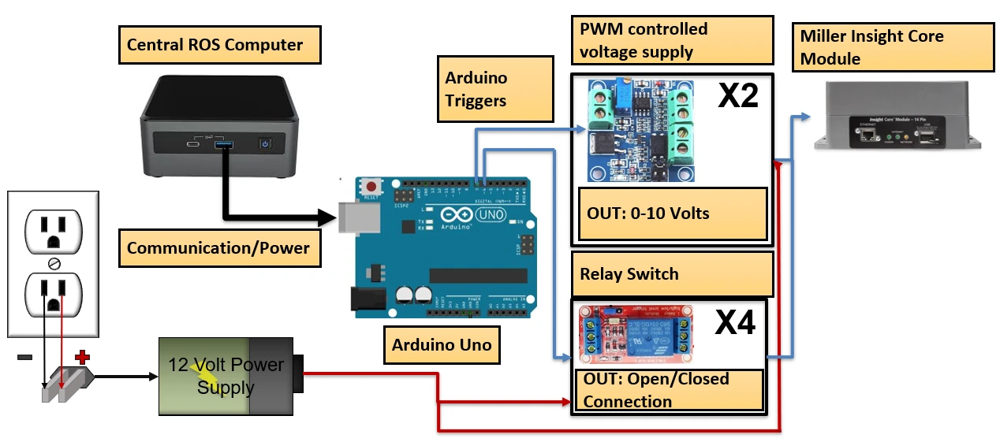
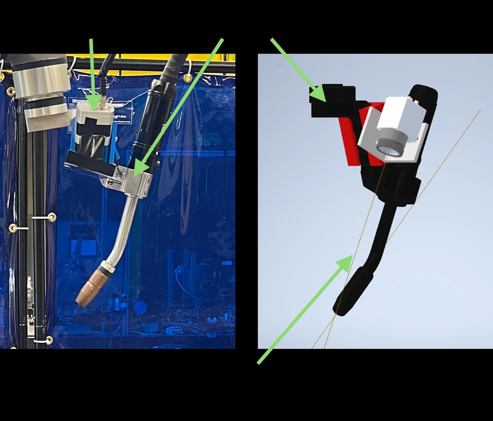
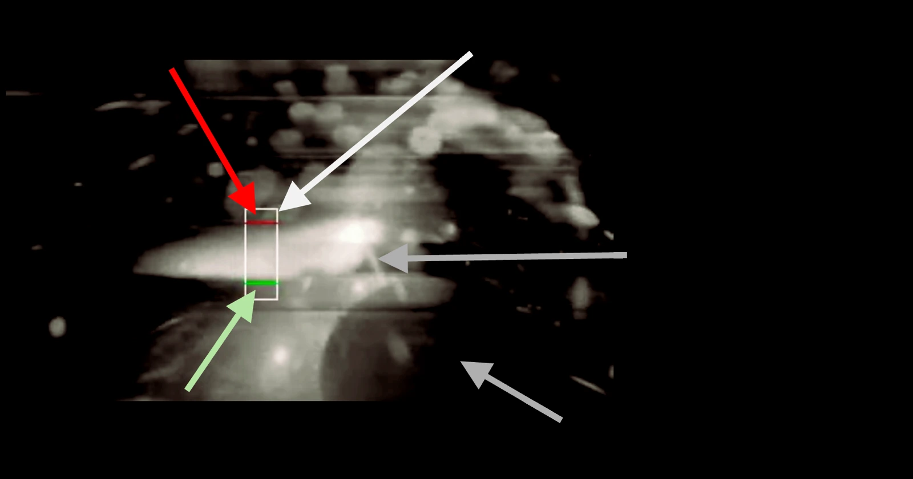

Robotic Automation · Motion planning
Robotic welding automation
CAD-guided robotic welding with part registration, torch-pose planning and coordinated execution.

Overview
A CAD-guided robotic welding platform that connects workpiece geometry to torch motion and welder commands. The documented implementation covers registration, planning and execution before the later closed-loop process-control extension.
- Register the part
- Sequence seams
- Construct torch poses
- Plan & time motion
- Execute & inspect
Technical contributions
- Registration and geometry. Developed a workflow for pairing CAD features with measured workpiece points and registering them to the robot frame. Selected seam geometry supplies welding targets, torch-orientation hints and approach/retreat waypoints.
- Motion generation. Integrated pose interpolation, MoveIt planning and trajectory timing based on the requested travel speed. Joint-motion diagnostics and reconstructed tool positions support inspection of the planned motion.
- Operator interface and execution. Combined PyQt5 and RViz with robot execution and welder voltage, wire-feed and trigger commands. The interface brings geometry selection, motion visualization and coordinated hardware operation into one workflow.
Results
Integrated CAD-to-robot execution with trajectory diagnostics and tool-position logging. Later work added infrared monitoring and process feedback for travel-speed and arc-voltage regulation.
Related research
The references below discuss weld-geometry and penetration control in related systems.
A closer look










Watch the system
Opens the video on Google Drive in a new tab.
Read more
Technical explanation based on the project report and the pre-closed-loop implementation supplied for review. Report figures document this earlier platform. The later process-feedback extension is described separately; proprietary source code is not distributed.